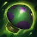

GUERRILLA WARFARE
If Teemo stands still and takes no actions for a short duration, he becomes Invisible indefinitely.
If he's in brush, Teemo can enter and maintain his Invisibility while moving.
After leaving Invisibility, Teemo gains the Element of Surprise, increasing his Attack Speed for a few seconds.
BLINDING DART
Obscures an enemy's vision with a powerful venom, dealing damage to the target unit and blinding it for the duration.
MOVE QUICK
Teemo scampers around, passively increasing his Move Speed until he is struck by an enemy champion or turret.
Teemo can sprint to gain bonus Move Speed that isn't stopped by being struck for a short time.
TOXIC SHOT
Each of Teemo's attacks will poison the target, dealing damage on impact and each second after for 4 seconds.
NOXIOUS TRAP
Teemo throws an explosive poisonous trap using one of the mushrooms stored in his pack.
If an enemy steps on the trap, it will release a poisonous cloud, slowing enemies and damaging them over time.
If Teemo throws a mushroom onto another mushroom it will bounce, gaining additional range.